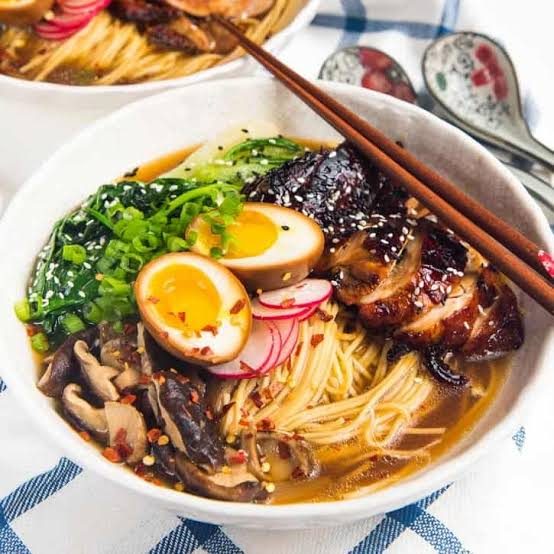

Home
Ramen

Description:
Ramen (拉麺, ラーメン or らあめん, rāmen;) is a Japanese-Chinese fusion noodle dish.It includes Chinese-style alkaline wheat noodles
(中華麺, chūkamen) served in several flavors of hot broth. Common flavors are soy sauce and miso, with typical toppings including
sliced pork (chāshū), nori (dried seaweed), lacto-fermented bamboo shoots (menma), narutomaki, and scallions. Nearly every region
in Japan has its own variation of ramen, such as the tonkotsu (pork bone broth) ramen of Kyushu and the miso ramen of Hokkaido.
Ingredients
Noodles: 2 packs of fresh or dried ramen noodles (discard flavor packets)
Broth Base:
4 cups low-sodium chicken or vegetable broth
3 tbsp white miso paste
2 tbsp soy sauce
1 tbsp toasted sesame oil
2 tsp doubanjiang (spicy chili bean paste) or gochujang
1 tbsp hot chili oil or chili crisp
Aromatics:
3 cloves garlic, minced
1 tbsp fresh ginger, grated
Toppings:
2 soft-boiled eggs (halved)
1/4 cup green onions, thinly sliced
1 tbsp sesame seeds
Optional: Corn, sliced mushrooms, or sautéed ground pork
Instructions:
step1:Heat the sesame oil in a large pot over medium heat. Add the minced garlic and grated ginger, cooking for 1 to 2 minutes until fragrant.
step2:Stir in the spicy chili bean paste (doubanjiang) and chili oil, cooking for another 15 seconds to release the heat and flavors into the oil.
step3:Pour in the chicken or vegetable broth and soy sauce. Bring the mixture to a gentle boil, then whisk in the white miso paste until fully dissolved.
Reduce heat to a low simmer for 5–10 minutes.
step4:Drop the ramen noodles directly into the simmering broth (or boil separately if you prefer a clearer soup) and cook for 3 to 4 minutes until al dente.
step5:soft-boiled egg, sliced green onions, and a sprinkle of sesame seeds.